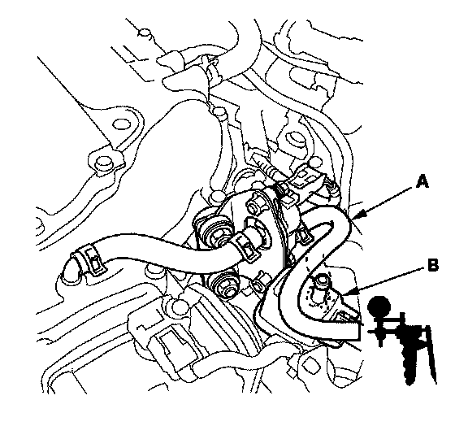
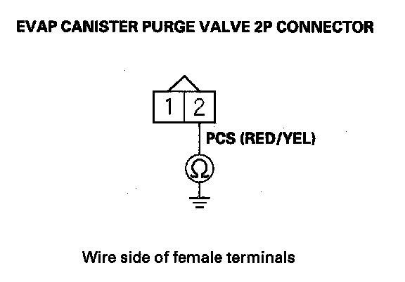
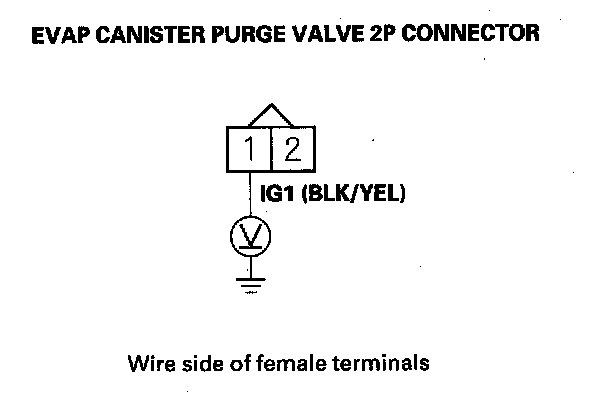
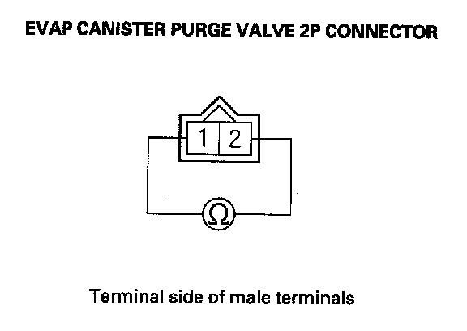

DTC Troubleshooting
DTC P0443: Evap Canister Purge Valve Circuit MalfunctionSpecial Tools Required
Vacuum pump/gauge, 0-30 in.Hg, Snap-on YA4000A or equivalent, commercially available
NOTE: Before you troubleshoot, record all freeze data and any on-board snapshot, and review the general troubleshooting information.
1. Turn the ignition switch ON (II).
2. Clear the DTC with the HDS.
3. Start the engine. Hold the engine speed at 3,000 rpm without load (in Park or neutral) until the radiator fan comes on, then let it idle.
4. Check for Temporary DTCs or DTCs with the HDS.
Is DTC P0443 indicated?
YES - Go to step 5.
NO - Intermittent failure, the system is OK at this time. Check for poor connections or loose terminals at the EVAP canister purge valve and the PCM.
5. Turn the ignition switch OFF, and allow the engine to cool below 140 °F (60 °C).

6. Disconnect the vacuum hose (A) from the purge joint (B) in the engine compartment, and connect a vacuum pump/gauge, 0 - 30 in.Hg, to the hose.
7. Start the engine, and let it idle.
Is there vacuum?
YES - Gotostep8.
NO - Go to step 14.
8. Turn the ignition switch OFF.
9. Disconnect the EVAP canister purge valve 2P connector.

10. Check for continuity between EVAP canister purge valve 2P connector terminal No. 2 and body ground.
Is there continuity?
YES - Go to step 11.
NO - Go to step 23.
11. Jump the SCS line with the HDS.
12. Disconnect PCM connector C (49P).

13. Check for continuity between EVAP canister purge valve 2P connector terminal No. 2 and body ground.
Is there continuity?
YES - Repair short in the wire between the EVAP canister purge valve and the PCM (C40), then go to step 24.
NO - Go to step 30.
14. Turn the ignition switch OFF.
15. Disconnect the EVAP canister purge valve 2P connector.
16. Turn the ignition switch ON (II).

17. Measure voltage between EVAP canister purge valve 2P connector terminal No. 1 and body ground.
Is there battery voltage?
YES - Go to step 18.
NO - Repair open in the wire between the EVAP canister purge valve and the No. 18 ACG (10 A) fuse in the under-dash fuse/relay box, then go to step 24.
18. Turn the ignition switch OFF.
19. Jump the SCS line with the HDS.
20. Disconnect PCM connector C (49P).

21. Check for continuity between PCM connector terminal C40 and EVAP canister purge valve 2P connector terminal No. 2.
Is there continuity?
YES - Go to step 22.
NO - Repair open in the wire between the EVAP canister purge valve and the PCM (C40), then go to step 24.

22. At the valve side, measure resistance between EVAP canister purge valve 2P connector terminals No. 1 and No. 2.
Is there about 33 ohms at room temperature?
YES - Go to step 30.
NO - Go to step 23.
23. Replace the EVAP canister purge valve.
24. Reconnect all connectors.
25. Turn the ignition switch ON (II).
26. Reset the PCM with the HDS.
27. Do the PCM idle learn procedure.
28. Check for Temporary DTCs or DTCs with the HDS.
Is DTC P0443 indicated?
YES - Check for poor connections or loose terminals at the EVAP canister purge valve and the PCM, then go to step 1.
NO - Go to step 29.
29. Monitor the OBD STATUS for DTC P0443 in the DTCs MENU with the HDS.
Does the screen indicate PASSED?
YES - Troubleshooting is complete. If any other Temporary DTCs or DTCs were indicated in step 28, go to the indicated DTCs troubleshooting.
NO - If the screen indicates FAILED, check for poor connections or loose terminals at the EVAP canister purge valve and the PCM, then go to step 1. If the screen indicates NOT COMPLETED, keep idling until a result comes on.
30. Reconnect all connectors.
31. Update the PCM if it does not have the latest software, or substitute a known-good PCM.
32. Check for Temporary DTCs or DTCs with the HDS.
Is DTC P0443 indicated?
YES - Check for poor connections or loose terminals at the EVAP canister purge valve and the PCM. If the PCM was updated, substitute a known-good PCM, then recheck. If the PCM was substituted, go to step 1.
NO - Go to step 33.
33. Monitor the OBD STATUS for DTC P0443 in the DTCs MENU with the HDS.
Does the screen indicate PASSED?
YES - If the PCM was updated, troubleshooting is complete. If the PCM was substituted, replace the original PCM. If any other Temporary DTCs or DTCs were indicated in step 32, go to the indicated DTCs troubleshooting.
NO - If the screen indicates FAILED, check for poor connections or loose terminals at the EVAP canister purge valve and the PCM. If the PCM was updated, substitute a known-good PCM, then recheck. If the PCM was substituted, go to step 1. If the screen indicates NOT COMPLETED, keep idling until a result comes on.